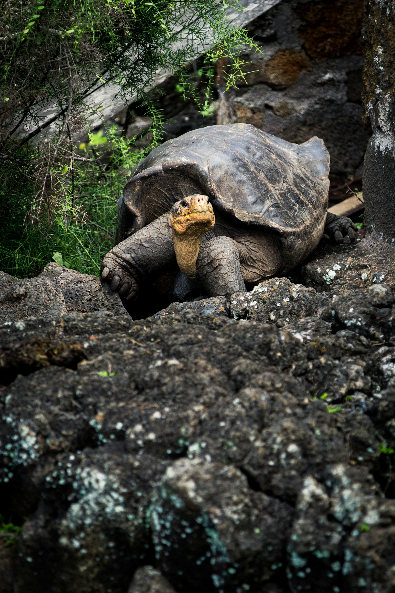
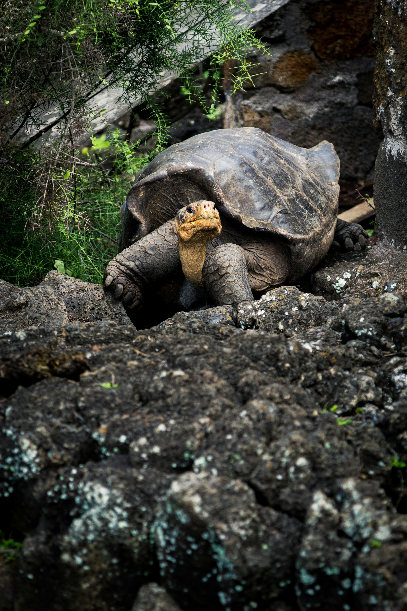

Naming and etymology
The word turtle is borrowed from the French word tortue or tortre 'turtle, tortoise'.[3] It is a common name and may be used without knowledge of taxonomic distinctions. In North America, it may denote the order as a whole. In Britain, the name is used for sea turtles as opposed to freshwater terrapins and land-dwelling tortoises. In Australia, which lacks true tortoises (family Testudinidae), non-marine turtles were traditionally called tortoises, but more recently turtle has been used for the entire group.[4] The name of the order, Testudines (/tɛˈstjuːdɪniːz/ ⓘ teh-STEW-din-eez), is based on the Latin word testudo 'tortoise';[5] and was coined by German naturalist August Batsch in 1788.[1] The order has also been historically known as Chelonii (Latreille 1800) and Chelonia (Ross and Macartney 1802),[2] which are based on the Ancient Greek word χελώνη (chelone) 'tortoise'.[6][7] Testudines is the official order name due to the principle of priority.[2] The term chelonian is used as a formal name for members of the group.[1][8]
Anatomy and physiology
Size
The largest living species of turtle (and fourth-largest reptile) is the leatherback turtle, which can reach over 2.7 m (8 ft 10 in) in length and weigh over 500 kg (1,100 lb).[9] The largest known turtle was Archelon ischyros, a Late Cretaceous sea turtle up to 4.5 m (15 ft) long, 5.25 m (17 ft) wide between the tips of the front flippers, and estimated to have weighed over 2,200 kg (4,900 lb).[10] The smallest living turtle is Chersobius signatus of South Africa, measuring no more than 10 cm (3.9 in) in length[11] and weighing 172 g (6.1 oz).[12]
Shell
The shell of a turtle is unique among vertebrates and serves to protect the animal and provide shelter from the elements.[13][14][15] It is primarily made of 50–60 bones and consists of two parts: the domed, dorsal (back) carapace and the flatter, ventral (belly) plastron. They are connected by lateral (side) extensions of the plastron.[13][16]
The carapace is fused with the vertebrae and ribs while the plastron is formed from bones of the shoulder girdle, sternum, and gastralia (abdominal ribs).[13] During development, the ribs grow sideways into a carapacial ridge, unique to turtles, entering the dermis (inner skin) of the back to support the carapace. The development is signaled locally by proteins known as fibroblast growth factors that include FGF10.[17] The shoulder girdle in turtles is made up of two bones, the scapula and the coracoid.[18] Both the shoulder and pelvic girdles of turtles are located within the shell and hence are effectively within the rib cage. The trunk ribs grow over the shoulder girdle during development.[19]
The shell is covered in epidermal (outer skin) scales known as scutes that are made of keratin, the same substance that makes up hair and fingernails. Typically, a turtle has 38 scutes on the carapace and 16 on the plastron, giving them 54 in total. Carapace scutes are divided into "marginals" around the margin and "vertebrals" over the vertebral column, though the scute that overlays the neck is called the "cervical". "Pleurals" are present between the marginals and vertebrals.[20] Plastron scutes include gulars (throat), humerals, pectorals, abdominals, and anals. Side-necked turtles additionally have "intergular" scutes between the gulars.[16][21] Turtle scutes are usually structured like mosaic tiles, but some species, like the hawksbill sea turtle, have overlapping scutes on the carapace.[16]
The shapes of turtle shells vary with the adaptations of the individual species, and sometimes with sex. Land-dwelling turtles are more dome-shaped, which appears to make them more resistant to being crushed by large animals. Aquatic turtles have flatter, smoother shells that allow them to cut through the water. Sea turtles in particular have streamlined shells that reduce drag and increase stability in the open ocean. Some turtle species have pointy or spiked shells that provide extra protection from predators and camouflage against the leafy ground. The lumps of a tortoise shell can tilt its body when it gets flipped over, allowing it to flip back. In male tortoises, the tip of the plastron is thickened and used for butting and ramming during combat.[22]
Shells vary in flexibility. Some species, such as box turtles, lack the lateral extensions and instead have the carapace bones fully fused or ankylosed together. Several species have hinges on their shells, usually on the plastron, which allow them to expand and contract. Softshell turtles have rubbery edges, due to the loss of bones. The leatherback turtle has hardly any bones in its shell, but has thick connective tissue and an outer layer of leathery skin.[23]
Head and neck
The turtle's skull is unique among living amniotes (which includes reptiles, birds and mammals); it is solid and rigid with no openings for muscle attachment (temporal fenestrae).[24][25] Muscles instead attach to recesses in the back of the skull. Turtle skulls vary in shape, from the long and narrow skulls of softshells to the broad and flattened skull of the mata mata.[25] Some turtle species have developed large and thick heads, allowing for greater muscle mass and stronger bites.[26]
Turtles that are carnivorous or durophagous (eating hard-shelled animals) have the most powerful bites. For example, the durophagous Mesoclemmys nasuta has a bite force of 432 lbf (1,920 N). Species that are insectivorous, piscivorous (fish-eating), or omnivorous have lower bite forces.[27] Living turtles lack teeth but have beaks made of keratin sheaths along the edges of the jaws.[28][13] These sheaths may have sharp edges for cutting meat, serrations for clipping plants, or broad plates for breaking mollusks.[29] Sea turtles, and several extinct forms, have evolved a bony secondary palate which completely separates the oral and nasal cavities.[30]
The necks of turtles are highly flexible, possibly to compensate for their rigid shells. Some species, like sea turtles, have short necks while others, such as snake-necked turtles, have long ones. Despite this, all turtle species have eight neck vertebrae, a consistency not found in other reptiles but similar to mammals.[31] Some snake-necked turtles have both long necks and large heads, limiting their ability to lift them when not in water.[26] Some turtles have folded structures in the larynx or glottis that vibrate to produce sound. Other species have elastin-rich vocal cords.[32][33]
Limbs and locomotion
Due to their heavy shells, turtles are slow-moving on land. A desert tortoise moves at only 0.22–0.48 km/h (0.14–0.30 mph). By contrast, sea turtles can swim at 30 km/h (19 mph).[13] The limbs of turtles are adapted for various means of locomotion and habits and most have five toes. Tortoises are specialized for terrestrial environments and have column-like legs with elephant-like feet and short toes. The gopher tortoise has flattened front limbs for digging in the substrate. Freshwater turtles have more flexible legs and longer toes with webbing, giving them thrust in the water. Some of these species, such as snapping turtles and mud turtles, mainly walk along the water bottom, as they would on land. Others, such as terrapins, swim by paddling with all four limbs, switching between the opposing front and hind limbs, which keeps their direction stable.[13][34]
Sea turtles and the pig-nosed turtle are the most specialized for swimming. Their front limbs have evolved into flippers while the shorter hind limbs are shaped more like rudders. The front limbs provide most of the thrust for swimming, while the hind limbs serve as stabilizers.[13][36] Sea turtles such as the green sea turtle rotate the front limb flippers like a bird's wings to generate a propulsive force on both the upstroke and on the downstroke. This is in contrast to similar-sized freshwater turtles (measurements having been made on young animals in each case) such as the Caspian turtle, which uses the front limbs like the oars of a rowing boat, creating substantial negative thrust on the recovery stroke in each cycle. In addition, the streamlining of the marine turtles reduces drag. As a result, marine turtles produce a propulsive force twice as large, and swim six times as fast, as freshwater turtles. The swimming efficiency of young marine turtles is similar to that of fast-swimming fish of open water, like mackerel.[35]
Compared to other reptiles, turtles tend to have reduced tails, but these vary in both length and thickness among species and between sexes. Snapping turtles and the big-headed turtle have longer tails; the latter uses it for balance while climbing. The cloaca is found underneath and at the base, and the tail itself houses the reproductive organs. Hence, males have longer tails to contain the penis. In sea turtles, the tail is longer and more prehensile in males, who use it to grasp mates. Several turtle species have spines on their tails.[37][24]
Senses
Turtles make use of vision to find food and mates, avoid predators, and orient themselves. The retina's light-sensitive cells include both rods for vision in low light, and cones with three different photopigments for bright light, where they have full-color vision. There is possibly a fourth type of cone that detects ultraviolet, as hatchling sea turtles respond experimentally to ultraviolet light, but it is unknown if they can distinguish this from longer wavelengths. A freshwater turtle, the red-eared slider, has an exceptional seven types of cone cell.[38][39][40]
Sea turtles orient themselves on land by night, using visual features detected in dim light. They can use their eyes in clear surface water, muddy coasts, the darkness of the deep ocean, and also above water. Unlike in terrestrial turtles, the cornea (the curved surface that lets light into the eye) does not help to focus light on the retina, so focusing underwater is handled entirely by the lens, behind the cornea. The cone cells contain oil droplets placed to shift perception toward the red part of the spectrum, improving color discrimination. Visual acuity, studied in hatchlings, is highest in a horizontal band with retinal cells packed about twice as densely as elsewhere. This gives the best vision along the visual horizon. Sea turtles do not appear to use polarized light for orientation as many other animals do. The deep-diving leatherback turtle lacks specific adaptations to low light, such as large eyes, large lenses, or a reflective tapetum. It may rely on seeing the bioluminescence of prey when hunting in deep water.[38]
Turtles have no ear openings; the eardrum is covered with scales and encircled by a bony otic capsule, which is absent in other reptiles.[31] Their hearing thresholds are high in comparison to other reptiles, reaching up to 500 Hz in air, but underwater they are more attuned to lower frequencies.[41] The loggerhead sea turtle has been shown experimentally to respond to low sounds, with maximal sensitivity between 100 and 400 Hz.[42]
Turtles have olfactory (smell) and vomeronasal receptors along the nasal cavity, the latter of which are used to detect chemical signals.[43] Experiments on green sea turtles showed they could learn to respond to a selection of different odorant chemicals such as triethylamine and cinnamaldehyde, which were detected by olfaction in the nose. Such signals could be used in navigation.[44]
Behaviour
Diet and feeding
Most turtle species are opportunistic omnivores; land-dwelling species are more herbivorous and aquatic ones more carnivorous.[26] Generally lacking speed and agility, most turtles feed either on plant material or on animals with limited movements like mollusks, worms, and insect larvae.[13] Some species, such as the African helmeted turtle and snapping turtles, eat fish, amphibians, reptiles (including other turtles), birds, and mammals. They may take them by ambush but also scavenge.[60] The alligator snapping turtle has a worm-like appendage on its tongue that it uses to lure fish into its mouth. Tortoises are the most herbivorous group, consuming grasses, leaves, and fruits.[61] Many turtle species, including tortoises, supplement their diet with eggshells, animal bones, hair, and droppings for extra nutrients.[62]
Turtles generally eat their food in a straightforward way, though some species have special feeding techniques.[13] The yellow-spotted river turtle and the painted turtle may filter feed by skimming the water surface with their mouth and throat open to collect particles of food. When the mouth closes, the throat constricts and water is pushed out through the nostrils and the gap in between the jaws.[63] Some species employ a "gape-and-suck method" where the turtle opens its jaws and expands its throat widely, sucking the prey in.[13][64][65]
The diet of an individual within a species may change with age, sex, and season, and may also differ between populations. In many species, juveniles are generally carnivorous but become more herbivorous as adults.[13][66] With Barbour's map turtle, the larger female mainly eats mollusks while the male usually eats arthropods.[13] Blanding's turtle may feed mainly on snails or crayfish depending on the population. The European pond turtle has been recorded as being mostly carnivorous much of the year but switching to water lilies during the summer.[67] Some species have developed specialized diets such as the hawksbill, which eats sponges, the leatherback, which feeds on jellyfish, and the Mekong snail-eating turtle.[26][13]
Communication and intelligence
While popularly thought of as mute, turtles make various sounds to communicate.[69][70] One study which recorded 53 species found that all of them vocalized.[71] Tortoises may bellow when courting and mating.[70][31] Various species of both freshwater and sea turtles emit short, low-frequency calls from the time they are in the egg to when they are adults. These vocalizations may serve to create group cohesion when migrating.[70] The oblong turtle has a particularly large vocal range; producing sounds described as clacks, clicks, squawks, hoots, various kinds of chirps, wails, hooos, grunts, growls, blow bursts, howls, and drum rolls.[68]
Play behavior has been documented in some turtle species.[72] In the laboratory, Florida red-bellied cooters can learn novel tasks and have demonstrated a long-term memory of at least 7.5 months.[73] Similarly, giant tortoises can learn and remember tasks, and master lessons much faster when trained in groups.[74] Tortoises appear to be able to retain operant conditioning nine years after their initial training.[75] Studies have shown that turtles can navigate the environment using landmarks and a map-like system resulting in accurate direct routes towards a goal.[76] Navigation in turtles have been correlated to high cognition function in the medial cortex region of the brain.[76][77]
Reproduction and life cycle
Turtles have a wide variety of mating behaviors but do not form pair-bonds or social groups.[83] In green sea turtles, females generally outnumber males.[84] In terrestrial species, males are often larger than females and fighting between males establishes a dominance hierarchy for access to mates. For most semi-aquatic and bottom-walking aquatic species, combat occurs less often. Males of these species instead may use their size advantage to mate forcibly. In fully aquatic species, males are often smaller than females and rely on courtship displays to gain mating access to females.[85]
 
